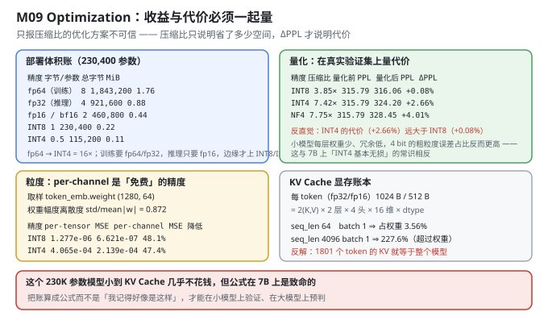
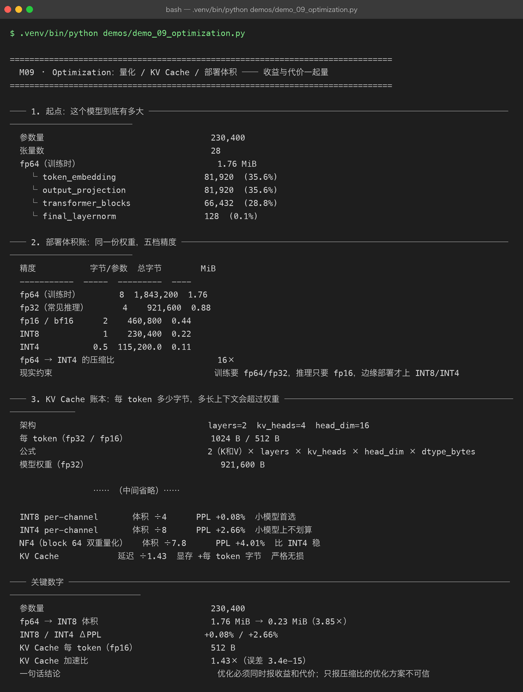

Milestone 09 — Optimization：收益与代价必须一起量
M08 证明了"能推理"。但能跑不等于跑得起——这一章算两笔账：这份权重部署时要占多少空间（量化），以及长上下文要额外花多少显存（KV Cache 账本）。
本章的立场只有一句：只报压缩比的优化方案不可信。 压缩比只说明省了多少空间；ΔPPL 才说明你为此付出了多少代价。两者必须同时报出来，否则那不是优化方案，是宣传材料。
1. Why：优化有两个常见的"半边账"
- 只报压缩比，不报精度损失。 "INT4 压缩 16 倍！"——听起来很美。但如果它让 PPL 从 315.79 涨到 324.20（+2.66%），你就得分清：这个代价在你的场景里值不值 8 倍空间。
- 只报"省了显存"，不报"每 token 到底花多少"。 KV Cache 的显存占用不是常数，它随
batch × seq_len线性增长。必须把它算成一个公式，才能回答"多长的上下文会让 KV 超过模型本身"。
2. Design：把两个账都算成公式
2.1 量化：精度 × 粒度
量化：w → round((w - zero) / scale)，再反量化回浮点参与计算
粒度：
per-tensor 整个张量共享一组 (scale, zero) ← 存 1 组，但误差大
per-channel 每个输出通道一组 (scale, zero) ← 多存 d_out 组，误差小
NF4 block=64 每 64 个权重一组 + 二次量化 scale ← 误差居中，压缩比最高为什么 per-channel 能让误差明显下降：神经网络的权重各通道的尺度往往差很多（std/mean|w| = 0.872 说明幅度很离散）。per-tensor 用一组 scale 覆盖所有通道，就必然在"大通道"上欠拟合、在"小通道"上过拟合。per-channel 为每个通道单独定标，只多存一点 scale，误差就掉一半。这就是"免费的精度"。
代价怎么量：不看它自己的 MSE，而是在真实验证集上跑语言模型评估，记录 ΔPPL = (量化后 PPL − 量化前 PPL) / 量化前 PPL。MSE 只是"权重像不像"，ΔPPL 才是"任务坏没坏"。
2.2 KV Cache 显存公式
bytes_per_token = 2 × layers × kv_heads × head_dim × dtype_bytes
= 2 × 2 × 4 × 16 × dtype_bytes （2 是因为 K 和 V）
= 256 × dtype_bytes代入 layers=2, kv_heads=4, head_dim=16：fp32 = 1024 B/token、fp16 = 512 B/token。
这是一个纯解析公式，不依赖任何运行时。它的价值在于：在小模型上验证公式对不对，在大模型上用它做容量预判。7B 模型的 bytes_per_token 会是这个值的几百倍——那时"长上下文吃爆显存"就是一个能提前算出来的数字，而不是上线后才知道的事故。

3. Real-run evidence（来自 demos/out/demo_09_optimization_terminal.txt）

3.1 起点：模型有多大
参数量 230,400
张量数 28
fp64（训练时） 1.76 MiB
└ token_embedding 81,920 (35.6%)
└ output_projection 81,920 (35.6%)
└ transformer_blocks 66,432 (28.8%)
└ final_layernorm 128 (0.1%)参数分布和 M04 一致：词嵌入 + 输出投影合计 71.2%，真正的 Transformer Block 只有 28.8%。这个分布预示了后面的一个反直觉结论：量化误差主要由少数几块大权重决定。
3.2 部署体积账：同一份权重，五档精度
精度 字节/参数 总字节 MiB
fp64（训练时） 8 1,843,200 1.76
fp32（常见推理） 4 921,600 0.88
fp16 / bf16 2 460,800 0.44
INT8 1 230,400 0.22
INT4 0.5 115,200.0 0.11
fp64 → INT4 的压缩比 16×从 fp64 到 INT4 是精确的 16 倍（8 字节 → 0.5 字节）。但这里有个容易忽略的现实约束：训练通常要 fp64/fp32（累加精度），推理只要 fp16，只有边缘部署才上 INT8/INT4。所以"压缩 16×"是从训练精度起算的；如果基线是 fp32 推理，INT4 只省 8 倍。
3.3 KV Cache 账本：每 token 多少字节
架构 layers=2 kv_heads=4 head_dim=16
每 token（fp32 / fp16） 1024 B / 512 B
公式 2（K和V）× layers × kv_heads × head_dim × dtype_bytes
模型权重（fp32） 921,600 B
batch seq_len KV 字节 KV GiB 占权重比
1 64 32,768 0.000031 3.5556%
1 256 131,072 0.000122 14.2222%
1 1024 524,288 0.000488 56.8889%
1 4096 2,097,152 0.001953 227.5556%
4 64 131,072 0.000122 14.2222%
4 1024 2,097,152 0.001953 227.5556%
KV Cache 追上模型权重所需长度 1801 fp16、batch=1
实测 max_len 下的 KV 65,536 B（64.00 KiB）这张表的意义是把"显存焦虑"变成一个可算的数字。
seq_len=64（本项目max_len）时，KV 只占权重的 3.56%——这个模型小到 KV Cache 几乎不花钱。- 但
seq_len=4096时占 227.6%——KV 比整个模型还大。 - 反解：1801 个 token 的 KV 就等于整个模型。
记住这个 1801。它不是这个项目的实际需求（本项目只用 64），而是公式给出的一个可迁移的直觉：当上下文长度增长时，"KV 的开销"会从"可以忽略"迅速变成"比权重还大"。在 7B 模型上这个临界点会早得多，那才是"长上下文吃爆显存"的数学根源。
为什么 batch 和 seq_len 一起乘：KV 的形状是 (batch, kv_heads, seq_len, head_dim)，逐 token、逐样本都要存。所以 batch=4, seq_len=1024 和 batch=1, seq_len=4096 的 KV 字节数完全一样——都是 2,097,152 B。这两个维度对称，是这张表里唯一需要"看两眼才反应过来"的地方。
3.4 量化：压缩比 vs 精度代价
基线（未量化） val_loss=5.7551 ppl=315.79 token_acc=0.1736
精度 粒度 压缩比 MSE 量化前 PPL 量化后 PPL ΔPPL token_acc
INT8 per_channel 3.85× 9.878e-07 315.79 316.06 +0.08% 0.1731
INT4 per_channel 7.42× 3.175e-04 315.79 324.20 +2.66% 0.1706
NF4 nf4_block_64 7.75× 2.867e-04 315.79 328.45 +4.01% 0.1736反直觉结论：INT4 的代价（+2.66%）远大于 INT8（+0.08%）——相差 33 倍，而压缩比只多了不到一倍（3.85× → 7.42×）。
为什么？小模型每层权重少、冗余度低，4 bit 的粗粒度误差占比反而更高。 这与"7B 模型上 INT4 基本无损"的常识相反——大模型有大量冗余可以吸收量化噪声，而 230K 参数的小模型几乎没有冗余。所以"INT4 无损"不是一条普适规律，而是"大模型特有"的性质。
再看 NF4：压缩比最高（7.75×），但 ΔPPL +4.01% 反而比 INT4 更差。"更先进的算法"（NF4 + 双重量化）在这么小的模型上并没有换回精度——它省了 MSE（2.867e-4 vs INT4 的 3.175e-4），但任务指标更差。这再次说明：MSE 小 ≠ 任务好。
3.5 粒度：per-channel 是"免费"的精度
取样张量 token_emb.weight
形状 (1280, 64)
权重幅度离散度 std/mean|w| 0.872
精度 per-tensor MSE per-channel MSE MSE 降低 rL2(per-t) rL2(per-c)
INT8 1.277e-06 6.621e-07 48.1% 0.0160 0.0115
INT4 4.065e-04 2.139e-04 47.4% 0.2859 0.2074
NF4 4.132e-05 4.132e-05 0.0% 0.0911 0.0911per-channel 把 INT8 的 MSE 降了 48.1%、INT4 降了 47.4%——误差直接砍半，而代价只是多存几组 scale。
std/mean|w| = 0.872 解释了为什么有效：权重幅度的离散度接近 0.87，说明各通道尺度差异很大，per-tensor 用一把尺子量所有人必然吃亏。
最后一行的 NF4：per-tensor 和 per-channel 的 MSE 完全一样（4.132e-05），降低 0.0%。原因很干净：NF4 的码本本身就是分块的（block=64），块内已经自带了细粒度的尺度调整，再叠加 per-channel 就是重复劳动，所以数值完全不变。这一行不是"NF4 没用"，而是说明 per-channel 的价值只对"全局统一量化的方案"（INT8/INT4）成立。
3.6 另一半优化：KV Cache 的速度收益
无缓存 / 有缓存 中位耗时 5.09 ms / 3.56 ms
加速比 1.43×
输出是否一致 True
logits 最大绝对误差 3.442e-15和 M08 同一个结论（略有波动，1.43× vs 1.34×，因为运行环境噪声）：KV Cache 是"严格无损"的优化——误差 3.442e-15（浮点舍入量级），输出完全一致。
"不等价的速度优化是 bug，不是优化" 这句话在这一章被重复验证，因为它是量化和 KV Cache 的根本区别：
- 量化：有损，代价是 ΔPPL（换来体积和算力）；
- KV Cache：无损，代价是显存（换来延迟）。
把这两种"优化"混在一起谈，是优化章节最常见的错误。
3.7 一张表说清楚：每种优化的收益与代价
优化手段 收益 代价 适用判断
INT8 per-channel 体积 ÷4 PPL +0.08% 小模型首选
INT4 per-channel 体积 ÷8 PPL +2.66% 小模型上不划算
NF4（block 64 双重量化） 体积 ÷7.8 PPL +4.01% 比 INT4 稳
KV Cache 延迟 ÷1.43 显存 +每 token 字节 严格无损这张表是本章的交付物：任何一个优化决策，都必须能填进这四列。填不满"代价"那一列的方案，不许上线。
4. 踩坑与反直觉发现
- "INT4 基本无损"是小模型上的假命题。 本项目实测 INT4 ΔPPL +2.66%，是 INT8（+0.08%）的 33 倍。大模型的冗余能吸收量化噪声，小模型不能。 任何从大模型抄来的"经验值"，都要在小模型上重新量一遍。
- MSE 小 ≠ 任务好。 NF4 的 MSE（2.867e-4）比 INT4（3.175e-4）还低，但 ΔPPL 反而更高（+4.01% vs +2.66%）。量化方案必须用 ΔPPL 验收，不能只看权重重建误差。
- per-channel 是"免费"的精度。 INT8/INT4 的 MSE 都降了约 48%，代价只是多存一点 scale。成本几乎为零、收益接近一半，这种优化没有理由不做。
- per-channel 对 NF4 完全无效（0.0%）。 因为 NF4 的 block 量化已经内置了细粒度尺度，再叠 per-channel 是重复。这说明"加粒度"不是越多越好，要看方案本身有没有已经在做这件事。
- KV Cache 的显存公式里 batch 和 seq_len 是乘起来的，彼此对称。
batch=4, seq=1024与batch=1, seq=4096消耗完全相同（2,097,152 B）。这一点不看形状容易忽略。 - 1801 个 token 的 KV 就等于整个模型（fp16, batch=1）。 这个数字在 7B 上会小得多。"长上下文吃爆显存"不是玄学，是可反解的不等式。
- 量化（有损）和 KV Cache（无损）是两类优化，别混。 量化省空间、代价是精度；KV Cache 省延迟、代价是显存。同一个"优化"标签下，权衡的维度完全不同。
5. Conclusion
- 模型 230,400 参数 / 28 张量 / fp64 1.76 MiB；词嵌入 + 输出投影占 71.2%。
- 部署体积：fp64 1.76 → fp32 0.88 → fp16 0.44 → INT8 0.22 → INT4 0.11 MiB，fp64→INT4 压缩 16×。
- KV Cache 账本：256 × dtype_bytes，即 fp32 1024 B/token、fp16 512 B/token；
seq_len=64占权重 3.56%，seq_len=4096占 227.6%；1801 token 的 KV = 整个模型。 - 量化代价（真实验证集）：INT8 3.85× / ΔPPL +0.08%、INT4 7.42× / +2.66%、NF4 7.75× / +4.01% ⇒ INT4 的代价是 INT8 的 33 倍，只换来不到 2× 的压缩。
- 粒度：per-channel 把 INT8/INT4 的 MSE 降 48.1% / 47.4%（近乎免费）；对 NF4 0.0%（block 量化已内置）。
- KV Cache 加速 1.43×（5.09 → 3.56 ms），严格无损（误差 3.442e-15）。
- 一句话结论：优化必须同时报收益和代价；只报压缩比的方案不可信。
6. Code map
| 文件 | 职责 |
|---|---|
src/tiny/optimize.py | deployment_size_table（五档体积）/ kv_cache_report（每 token 字节 + 追赶长度）/ quantization_report（真实验证集 ΔPPL）/ granularity_report（per-tensor vs per-channel MSE）/ optimization_report（收益代价总表） |
P09 src/ie/quantize.py | INT8 / INT4 / NF4 的量化与反量化实现、per-tensor / per-channel 分支 |
P09 src/ie/kvbook.py | KV Cache 字节公式与账面 |
src/tiny/infer.py | cache_consistency_error / benchmark（无损性验证） |
demos/demo_09_optimization.py | 7 节：起点体积 / 五档精度 / KV 账本 / 量化 ΔPPL / 粒度 / 速度 / 收益代价总表 |
demos/out/demo_09_optimization_terminal.txt | 本章所有数字的来源 |
assets/optimization.svg | 部署体积 + 量化代价 + 粒度 + KV 账本 |
assets/term-09-optimization.png | 真实运行截图 |
7. Version line
v0.8 → v0.9，量化与 KV Cache 账本落地并被双向度量。实测：230,400 参数 / fp64 1.76 MiB，fp64→INT4 压缩 16×；KV 每 token fp32 1024 B / fp16 512 B，1801 token 的 KV = 整个模型；量化（真实验证集）INT8 3.85× / ΔPPL +0.08%、INT4 7.42× / +2.66%、NF4 7.75× / +4.01%；per-channel 让 INT8/INT4 的 MSE 降低 48.1% / 47.4%（NF4 为 0.0%）；KV Cache 加速 1.43×、误差 3.442e-15（严格无损）。配图 1 张手写 SVG + 1 张真实终端截图。